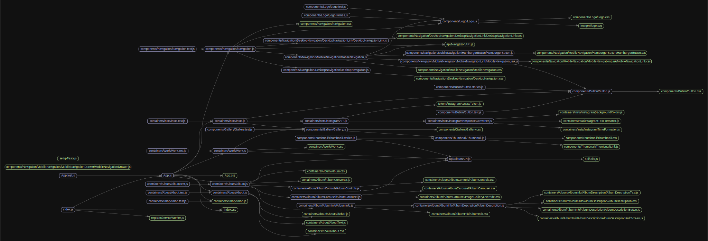

Tools for Getting Familiar With a New Codebase
Getting to know a new codebase takes time. Some tools can help make this learning process faster.
cloc
1 | $ npm install -g cloc # install |
cloc scans a repository and prints a summary of how many lines of code it contains.
It’s interesing to check out bigger repostiroies and check how many files and lines of code it contains.
It can put into perspective the scale of a given project.
Madge

1 | $ npm -g install madge |
Madge is a developer tool for generating a visual graph of your module dependencies, finding circular dependencies, and give you other useful info.
gource

1 | $ gource . |
gource creates an animation of the selected repository.
You can follow how a repository was built how file structure changed and how many people how frequently changed it.